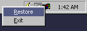
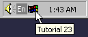

| Sulaiman Chang Personal Website |
|
Tutorial 23 : Tray Icon
format PE GUI 4.0
entry start
include '%fasminc%\win32a.inc'
WUM_SHELLNOTIFY equ WM_USER + 5
MI_RESTORE equ 1000
MI_EXIT equ 1001
SBI_TRAY equ 0
section '.data' data readable writeable
wndH dd ?
insH dd ?
wndClsName db 'TUT_23',0
wndTitle db 'Tutorial 23',0
wndCls WNDCLASS
wndMsg MSG
menuH dd ?
menuPt POINT
menuRect RECT
miRESTORE db '&Restore',0
miEXIT db '&Exit',0
statBarData NOTIFYICONDATA
section '.code' code readable executable
start:
invoke GetModuleHandle,0
mov [insH],eax
mov [wndCls.hInstance],eax
mov [wndCls.style],CS_HREDRAW or CS_VREDRAW
mov [wndCls.lpfnWndProc],window_procedure
mov [wndCls.lpszClassName],wndClsName
mov [wndCls.hbrBackground],COLOR_BTNFACE+1
invoke LoadIcon,NULL,IDI_APPLICATION
mov [wndCls.hIcon],eax
invoke LoadCursor,NULL,IDC_ARROW
mov [wndCls.hCursor],eax
invoke RegisterClass,wndCls
invoke CreateWindowEx,WS_EX_CLIENTEDGE,\
wndClsName,wndTitle,\
WS_OVERLAPPEDWINDOW + WS_VISIBLE,\
CW_USEDEFAULT,CW_USEDEFAULT,\
400,240,\
NULL,NULL,[insH],NULL
mov [wndH],eax
;+---------------------------+
;| entering the message loop |
;+---------------------------+
window_message_loop_start:
invoke GetMessage,wndMsg,NULL,0,0
or eax,eax
je window_message_loop_end
invoke TranslateMessage,wndMsg
invoke DispatchMessage,wndMsg
jmp window_message_loop_start
window_message_loop_end:
invoke ExitProcess,0
;+----------------------+
;| the window procedure |
;+----------------------+
proc window_procedure,hWnd,uMsg,wParam,lParam
push ebx esi edi
cmp [uMsg],WUM_SHELLNOTIFY
je wumSHELLNOTIFY
cmp [uMsg],WM_COMMAND
je wmCOMMAND
cmp [uMsg],WM_SIZE
je wmSIZE
cmp [uMsg],WM_CREATE
je wmCREATE
cmp [uMsg],WM_DESTROY
je wmDESTROY
wmDEFAULT:
invoke DefWindowProc,[hWnd],[uMsg],[wParam],[lParam]
jmp wmBYE
wumSHELLNOTIFY:
cmp [wParam],SBI_TRAY
jne wmBYE
cmp [lParam],WM_RBUTTONDOWN
je wumSHELLNOTIFY_WM_RBUTTONDOWN
cmp [lParam],WM_LBUTTONDBLCLK
je wumSHELLNOTIFY_WM_LBUTTONDBLCLK
jmp wmBYE
wumSHELLNOTIFY_WM_LBUTTONDBLCLK:
invoke SendMessage,[hWnd],WM_COMMAND,MI_RESTORE,0
jmp wmBYE
wumSHELLNOTIFY_WM_RBUTTONDOWN:
invoke GetCursorPos,menuPt
invoke SetForegroundWindow,[hWnd]
invoke TrackPopupMenu,[menuH],TPM_RIGHTALIGN + TPM_RIGHTBUTTON,\
[menuPt.x],[menuPt.y],NULL,[hWnd],NULL
invoke PostMessage,[hWnd],WM_NULL,0,0
jmp wmBYE
wmCOMMAND:
cmp [lParam],0 ;message is not from control
jne wmBYE
invoke Shell_NotifyIcon,NIM_DELETE,statBarData
mov eax,[wParam]
cmp ax,MI_RESTORE
je wmCOMMAND_MI_RESTORE
invoke DestroyWindow,[hWnd]
jmp wmBYE
wmCOMMAND_MI_RESTORE:
invoke ShowWindow,[hWnd],SW_RESTORE
jmp wmBYE
wmSIZE:
cmp [wParam],SIZE_MINIMIZED
jne wmBYE
mov [statBarData.cbSize],sizeof.NOTIFYICONDATA
push [hWnd]
pop [statBarData.hWnd]
mov [statBarData.uID],SBI_TRAY
mov [statBarData.uFlags],NIF_ICON + NIF_MESSAGE + NIF_TIP
mov [statBarData.uCallbackMessage],WUM_SHELLNOTIFY
invoke LoadIcon,NULL,IDI_WINLOGO
mov [statBarData.hIcon],eax
invoke lstrcpy,statBarData.szTip,wndTitle
invoke ShowWindow,[hWnd],SW_HIDE
invoke Shell_NotifyIcon,NIM_ADD,statBarData
jmp wmBYE
wmCREATE:
invoke CreatePopupMenu
mov [menuH],eax
invoke AppendMenu,[menuH],MF_STRING,MI_RESTORE,miRESTORE
invoke AppendMenu,[menuH],MF_STRING,MI_EXIT,miEXIT
jmp wmBYE
wmDESTROY:
invoke DestroyMenu,[menuH]
invoke PostQuitMessage,0
wmBYE:
pop edi esi ebx
return
endp
section '.idata' import data readable
library KERNEL32, 'KERNEL32.DLL',\
USER32, 'USER32.DLL',\
SHELL32, 'SHELL32.DLL'
import KERNEL32,\
GetModuleHandle, 'GetModuleHandleA',\
lstrcpy, 'lstrcpyA',\
ExitProcess, 'ExitProcess'
import USER32,\
RegisterClass, 'RegisterClassA',\
CreateWindowEx, 'CreateWindowExA',\
DefWindowProc, 'DefWindowProcA',\
LoadCursor, 'LoadCursorA',\
LoadIcon, 'LoadIconA',\
SendMessage, 'SendMessageA',\
GetMessage, 'GetMessageA',\
MessageBox, 'MessageBoxA',\
CreatePopupMenu, 'CreatePopupMenu',\
DestroyMenu, 'DestroyMenu',\
AppendMenu, 'AppendMenuA',\
GetCursorPos, 'GetCursorPos',\
SetForegroundWindow, 'SetForegroundWindow',\
TrackPopupMenu, 'TrackPopupMenu',\
PostMessage, 'PostMessageA',\
ShowWindow, 'ShowWindow',\
DestroyWindow, 'DestroyWindow',\
TranslateMessage, 'TranslateMessage',\
DispatchMessage, 'DispatchMessageA',\
PostQuitMessage, 'PostQuitMessage'
import SHELL32,\
Shell_NotifyIcon, 'Shell_NotifyIcon'
Result :  |
| Copyright © 2004 Sulaiman Chang. All Rights Reserved. |